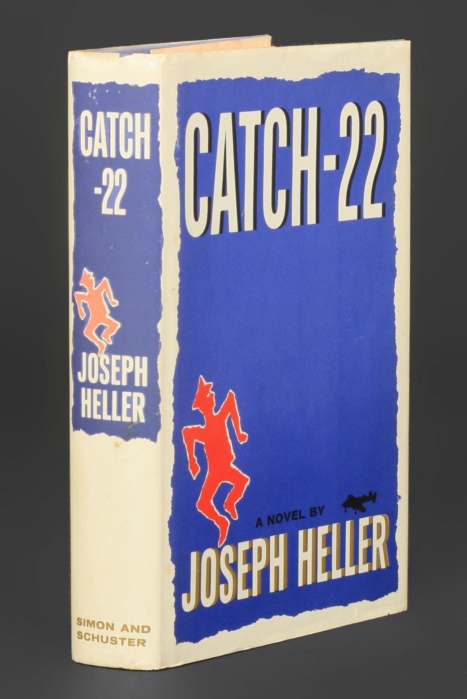

“He was going to live forever, or die in the attempt.”
 The plot mainly follows the life of Captain John Yossarian, a bombardier of the U.S. Army Air Force, but it occasionally covers other supporting characters who are sometimes a help or detriment to Yossarian's life and sanity.
Yossarian's main goal is not to seek glory or money out of The War, instead he only seeks to return home. At the very least he wants to be "grounded" to prevent any danger that comes with flying a bomber plane multiple times. Unfortunaly, he struggles to find a way out of more flying missions due to Catch-22s constantly interferring with his plans. See the Logic page on information on what a Catch-22 is, the quote below is somewhat of a hint.
"The Texan turned out to be good-natured, generous and likable. In three days no one could stand him."
One of the best aspects of the novel is the humor. The novel is filled with running jokes, and some really strange conversations. Some jokes have large setups that take multiple chapters to finish. Heller's style of writing almost makes it seem as though the reader is right there with the characters.
"Who is Spain?"
"Why is Hitler?"
"When is right?"
"Where was that stooped and mealy-colored old man I used to call Poppa when the merry-go-round broke down?"
"Ho-ho beriberi."
and
"Balls!"
all rang out in rapid succession, and then there was Yossarian with the question that had no answer:
"Where are the Snowdens of yesteryear?"